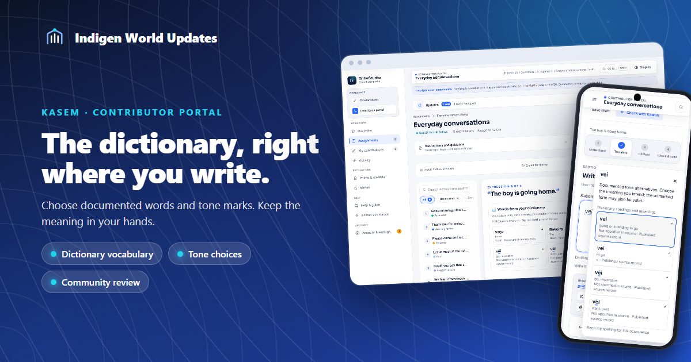
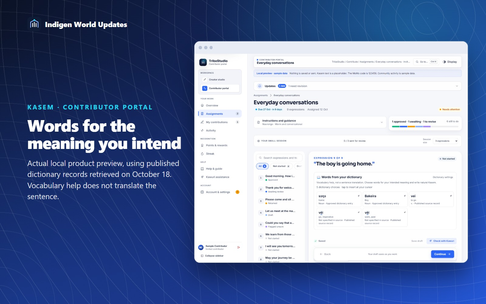
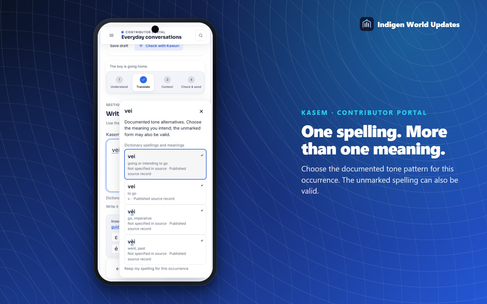
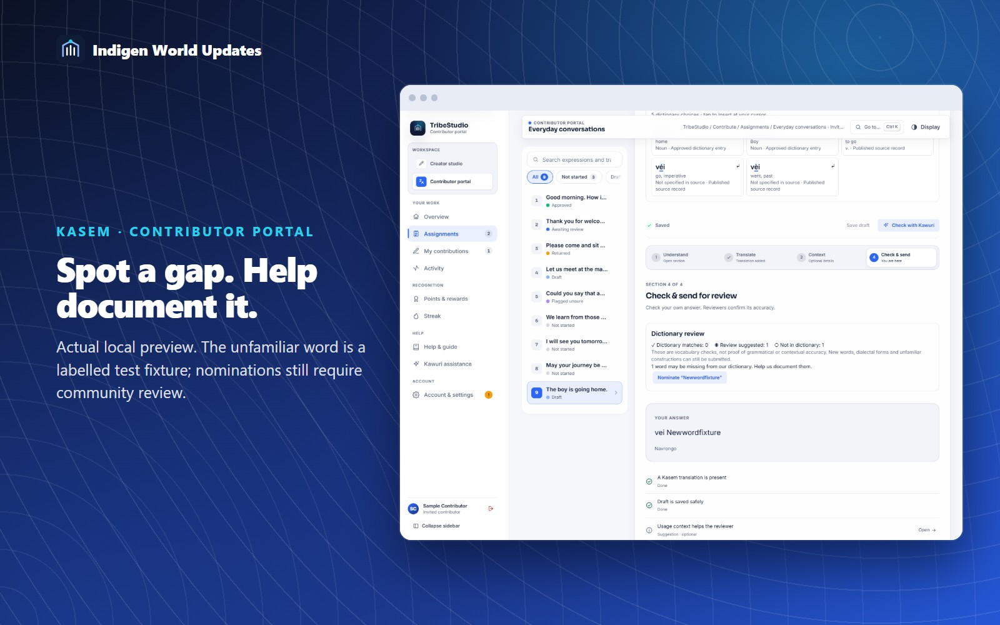

Writing natural Kasem should not depend on remembering every documented spelling. The contributor portal now brings dictionary vocabulary and tone choices into assigned sentence translation tasks.

A compact panel beneath the English sentence looks for matching English meanings in the existing dictionary. Tap a word to insert its stored Kasem spelling at your cursor. Different meanings remain separate choices.
These are vocabulary suggestions, not an automatic sentence translation. You decide which words fit the situation and how to form a natural Kasem sentence.

When your spelling matches a documented tone alternative, a gentle dotted underline offers a closer look. Tap the word, or use Alt and Down Arrow, to see the stored spelling, meaning, word class and available pronunciation. Tone-bearing letters are emphasized.
The dictionary includes vei, véi and vèi. These are actual stored forms with different recorded meanings. The portal shows the choices even when the unmarked form is also in the dictionary. It does not choose for you.
Your selection changes only that occurrence, keeping the surrounding sentence and punctuation. Native undo and redo remain available in tested Chromium browsers. You can keep your spelling for an occurrence, or turn suggestions and highlighting off in Dictionary settings.

The check stage counts dictionary matches, possible tone ambiguities and words without a match. A dictionary match does not prove the grammar or intended meaning is correct. An unfamiliar word is not automatically wrong, and it does not stop you submitting a legitimate dialectal form or new construction.
If a word may be missing, choose Nominate, provide its meaning and source, add tone marks if known, and send it to the existing dictionary review queue. This does not rewrite your sentence, publish a word or award points automatically.

This update targets assigned sentence translations in the web contributor portal. Existing sign-in, draft saving, review, history and reward rules continue to apply. The assistant uses dictionary records, with no language-model request for each keystroke.
The comparison removes only the configurable acute and grave tone marks documented by the project's Kasem orthography source. Other characters and marks remain distinct. The source also explains that ordinary Kasem words do not need every tone marked.
Lookups are debounced and cached. If dictionary help is unavailable, you can continue writing and submit through the normal workflow. Suggestions reflect the published dictionary's coverage and source limitations. No native mobile app or Play Store release is included.
Release status: implementation and local verification complete; confirm production deployment in this post's README before publishing this article.